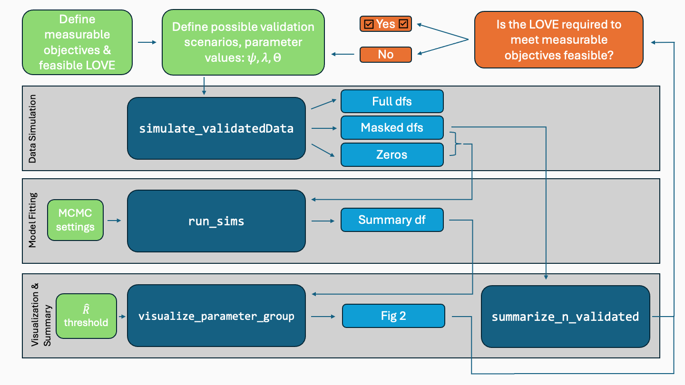

This repository contains the ValidationExplorer package, as described in the manuscript “ValidationExplorer: Streamlined simulations to inform bioacoustic study design in the presence of misclassification,” submitted to Journal of Data Science.
Disclaimer: This software is preliminary or provisional and is subject to revision. It is being provided to meet the need for timely best science. The software has not received final approval by the U.S. Geological Survey (USGS). No warranty, expressed or implied, is made by the USGS or the U.S. Government as to the functionality of the software and related material nor shall the fact of release constitute any such warranty. The software is provided on the condition that neither the USGS nor the U.S. Government shall be held liable for any damages resulting from the authorized or unauthorized use of the software.
Installation
To install from CRAN, run
install.packages("ValidationExplorer")You can install the development version of ValidationExplorer from GitHub with:
# install.packages("pak")
pak::pak("j-oram/BySpeciesValidation")Purpose
Many ecological studies rely on passive acoustic monitoring (PAM) to characterize status and trends of multiple species simultaneously. These methods can be especially useful for gathering field data from rare or cryptic taxa, such as bats. In the context of bat acoustic data, audio files obtained via PAM are often preprocessed using automated algorithms, which filter out non-bat noise and assign species labels (autoIDs) to each recording. Because autoIDs are subject to misclassification errors, treating autoIDs as observed data can bias status and trends estimates. Realistic Bayesian hierarchical models of bioacoustic data often account for misclassification by formally including this process as a level in the model, but this requires additional information to identify all model parameters. When high-quality prior information and/or auxiliary data are not available, expert manual review (validation) of a subset of autoIDs often provides the additional information required to estimate model parameters.
How should one select recordings for validation? This question – identifying a feasible validation design, in light of logistical constraints and study objectives – has informed the development of our package. The goal of ValidationExplorer is to provide a suite of simulation-based tools that streamline comparison of competing validation designs. We hope our software will allow practitioners to improve their bioacoustic study design and increase the efficiency of programs that rely on acoustic monitoring.
Overview
An overview of the main functionality of our package, which follows the steps of a simulation study, is illustrated below:

Flowchart illustrating the main functionality of the ValidationExplorer package.
The gray plates show the main steps of a simulation study with ValidationExplorer: simulating data, fitting models to those data, and summarizing results. Blue boxes show the main functions in our package that help accomplish each step. User inputs – including those that should be considered before opening R, such as the measurable objectives of the study and known financial and logistical constraints – are shown in green boxes. Repeated iteration on the set of possible validation and study designs may be necessary.
Example
A complete worked example (too long for a README file) comparing possible validation designs with our package is available as an article here.